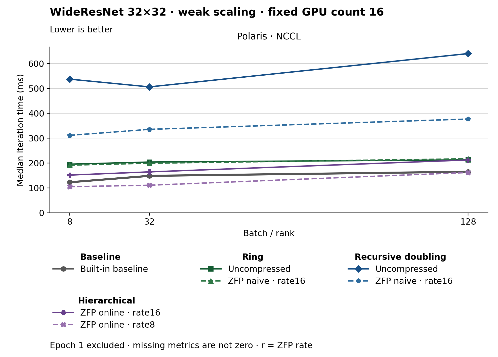

The figure uses lines. Methods use colors, line styles and markers. The metric is Median iteration time (ms). Polaris · NCCL, Batch / rank 8: Hierarchical · ZFP online · rate8 has the lowest plotted value, 104.765. Polaris · NCCL, Batch / rank 32: Hierarchical · ZFP online · rate8 has the lowest plotted value, 110.670. Polaris · NCCL, Batch / rank 128: Hierarchical · ZFP online · rate8 has the lowest plotted value, 161.725. Epoch 1 is excluded. Values are medians; when repeated runs are available the selected repeat policy is median. These are not confidence intervals across repeated jobs. Missing or unrecorded metrics are omitted, not set to zero.
| Panel | Batch / rank | Method | Value | Runs |
|---|---|---|---|---|
| Polaris · NCCL | 8 | none | 122.57 | 1 |
| Polaris · NCCL | 8 | ring | 195.18 | 1 |
| Polaris · NCCL | 8 | ring_zfp_naive:16 | 191.27 | 1 |
| Polaris · NCCL | 8 | hierarchical_zfp_online_coll:16 | 151.47 | 2 |
| Polaris · NCCL | 8 | hierarchical_zfp_online_coll:8 | 104.765 | 2 |
| Polaris · NCCL | 8 | recursive_doubling | 537.15 | 1 |
| Polaris · NCCL | 8 | recursive_doubling_zfp_naive:16 | 311.31 | 1 |
| Polaris · NCCL | 32 | none | 148.32 | 1 |
| Polaris · NCCL | 32 | ring | 203.82 | 1 |
| Polaris · NCCL | 32 | ring_zfp_naive:16 | 199.08 | 1 |
| Polaris · NCCL | 32 | hierarchical_zfp_online_coll:16 | 164.215 | 2 |
| Polaris · NCCL | 32 | hierarchical_zfp_online_coll:8 | 110.67 | 2 |
| Polaris · NCCL | 32 | recursive_doubling | 506.1 | 1 |
| Polaris · NCCL | 32 | recursive_doubling_zfp_naive:16 | 335.34 | 1 |
| Polaris · NCCL | 128 | none | 164.82 | 1 |
| Polaris · NCCL | 128 | ring | 212.51 | 1 |
| Polaris · NCCL | 128 | ring_zfp_naive:16 | 216.95 | 1 |
| Polaris · NCCL | 128 | hierarchical_zfp_online_coll:16 | 212.195 | 2 |
| Polaris · NCCL | 128 | hierarchical_zfp_online_coll:8 | 161.725 | 2 |
| Polaris · NCCL | 128 | recursive_doubling | 639.98 | 1 |
| Polaris · NCCL | 128 | recursive_doubling_zfp_naive:16 | 376.78 | 1 |